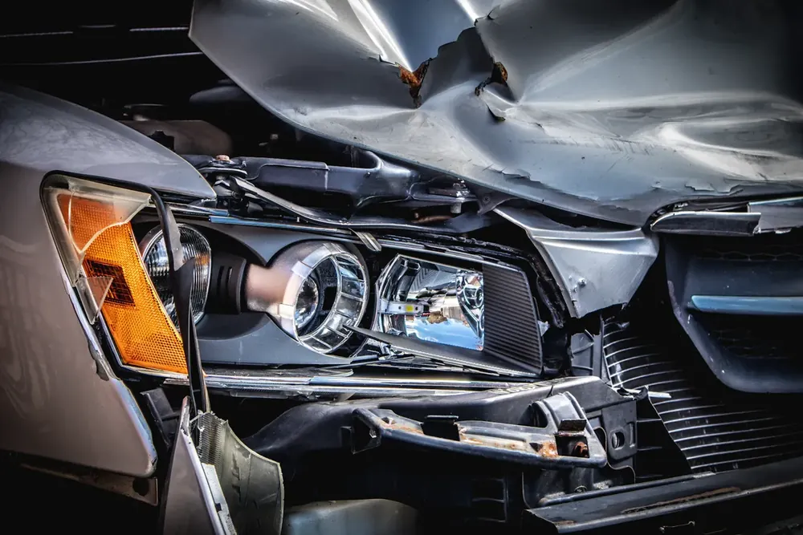
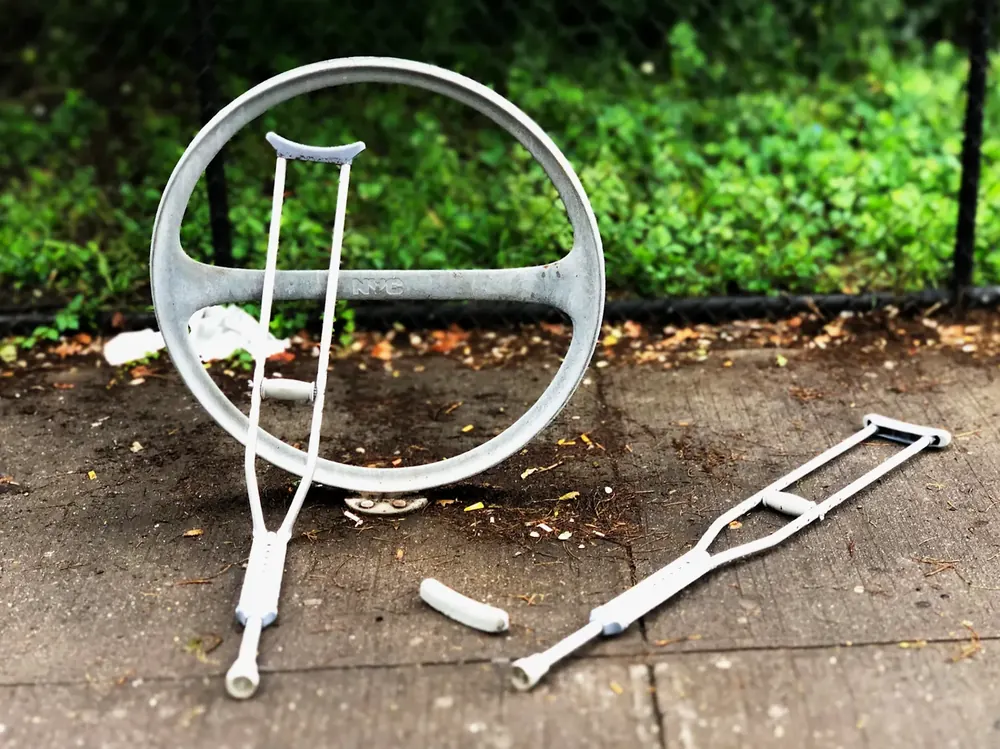
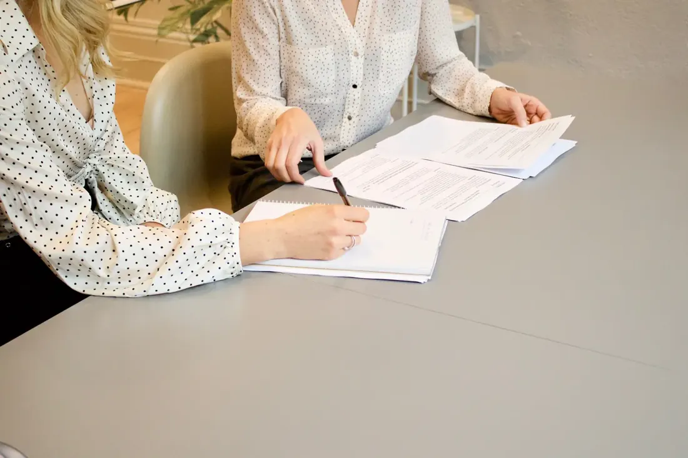
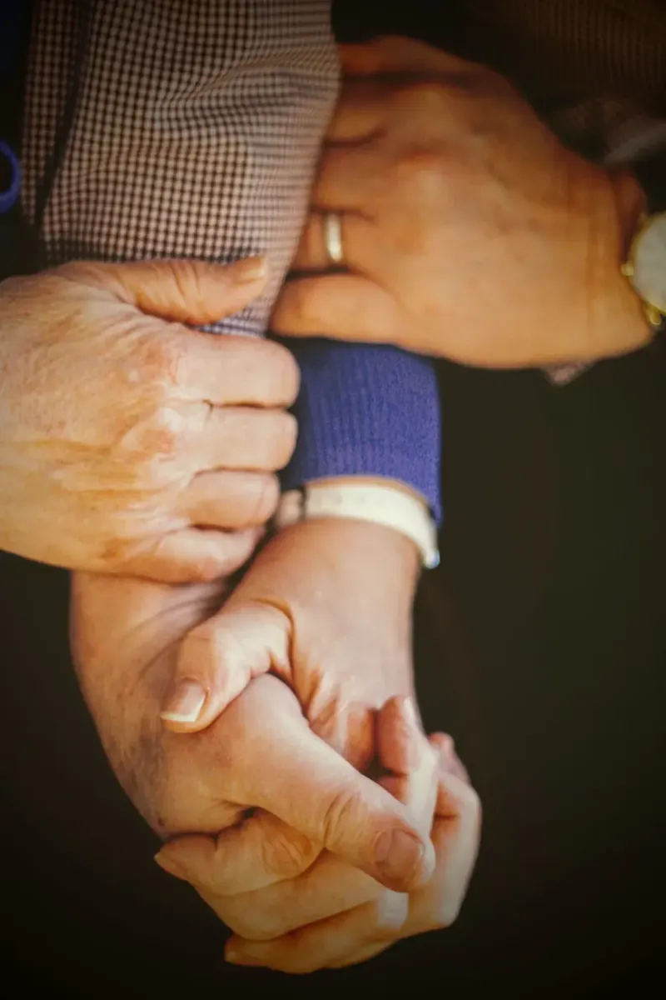
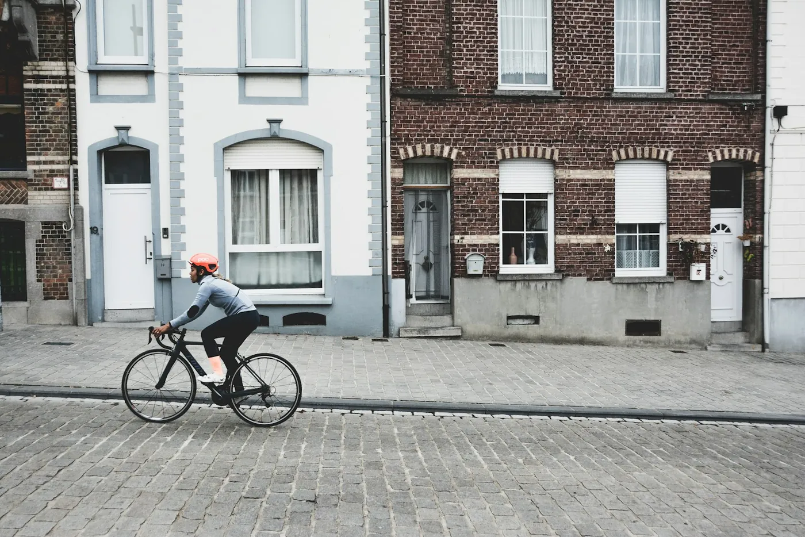
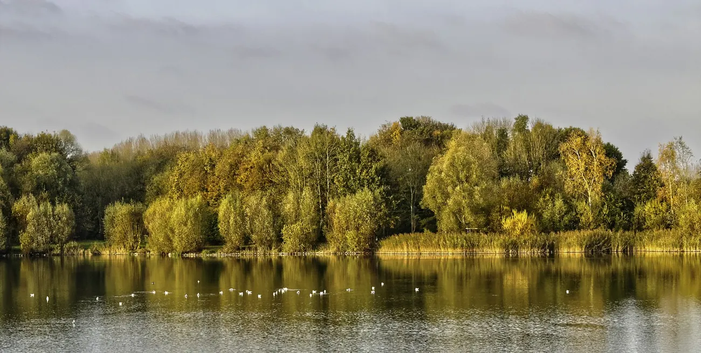

Iemand naast u, als het misloopt.
Ik ben Sibylle Miclotte, advocaat in de Wijngaardstraat in Geraardsbergen. Ik sta u bij in strafzaken, na een verkeersongeval en wanneer u met een verzekeraar of een tegenpartij discussieert over wie de schade betaalt.
Een brief gekregen die u niet begrijpt? Breng hem gewoon mee.
Waarvoor u bij mij terechtkunt
Vier domeinen die vaak samen opduiken. Een ongeval wordt een discussie met de verzekering, of een zaak voor de politierechtbank. Klik op een kaart, dan staat het al in het formulier.
Strafrecht
Een oproeping voor verhoor, een dagvaarding of een zitting. Ik bereid het samen met u voor en sta naast u.
Vraag hierover
02Verkeer
Een overtreding, een ongeval of een zaak voor de politierechtbank, waar soms ook uw rijbewijs op het spel staat.
Vraag hierover
03Aansprakelijkheid
Wie is verantwoordelijk voor de schade, en hoeveel? Of u nu schade lijdt of zelf aangesproken wordt.
Vraag hierover
04Verzekeringen
Een verzekeraar die weigert te betalen of te weinig uitkeert. We lezen samen wat er in uw polis staat.
Vraag hieroverWat is er gebeurd?
Duid aan wat bij u past. U ziet meteen wat u nu best doet en wat u meeneemt naar een eerste gesprek.
U wordt verhoord door de politie
Wat u nu best doet
- Wordt u verhoord als verdachte van een misdrijf, dan hebt u het recht om vooraf vertrouwelijk met een advocaat te spreken.
- Bel zo snel mogelijk, niet pas de avond voor het verhoor.
- Schrijf voor uzelf op wat er gebeurd is, zolang het nog vers in uw geheugen zit.
Neem mee
Ik ben Sibylle.
Een strafzaak of een ongeval komt zelden op een goed moment. U krijgt een brief, een oproeping of een telefoontje van de verzekering, en u weet niet goed wat het betekent of wat er van u verwacht wordt.
Dan wil u iemand die het rustig uitlegt, in gewone woorden, en die zegt wat de volgende stap is. Vanuit mijn kantoor in de Wijngaardstraat volg ik uw dossier zelf op, van het eerste gesprek tot de zitting.
U vertelt het één keer. Daarna weet ik waar we staan.

Zo verloopt een eerste gesprek
Geen ingewikkelde procedures. U weet na afloop waar u staat en wat de mogelijke stappen zijn.
U belt of mailt
Kort wat er speelt. We spreken een moment af om samen te zitten in de Wijngaardstraat.
We overlopen uw stukken
Breng mee wat u hebt: brieven, het pv, het aanrijdingsformulier, de mails met de verzekeraar. We lezen het samen.
U weet waar u staat
Welke stappen er mogelijk zijn, wat ze ongeveer vragen en wat u zelf al kunt doen.
Dat is de gemiddelde score uit 13 reviews op Google. Mensen die bij mij aanklopten, namen de moeite om iets te schrijven. Dat zegt meer dan een slogan.
Lees de reviews op GoogleHebt u een rechtsbijstandsverzekering?
Veel mensen hebben er een zonder het goed te weten, bijvoorbeeld als onderdeel van hun autoverzekering. Kijk uw polissen even na voor u belt.
- Komt het tot een procedure, dan kiest u met een rechtsbijstandsverzekering zelf uw advocaat.
- Wordt u aangesproken voor schade in uw privéleven, kijk dan ook naar uw familiale verzekering.
- Neem de polis mee naar het eerste gesprek, dan kijken we samen wat gedekt is.
Wat u wil weten
De vragen die bijna altijd op tafel komen voor we beginnen.
Of bel 054 42 19 22Verplicht is het niet. Gaat het om een zware overtreding, een ongeval met gewonden of staat uw rijbewijs op het spel, dan loont het om de zitting goed voor te bereiden. Dat doen we samen.
Ja. Wordt u verhoord als verdachte van een misdrijf, dan hebt u het recht om vooraf vertrouwelijk met een advocaat te overleggen. Bel dus op tijd, en niet pas op de dag zelf.
Hebt u een rechtsbijstandsverzekering, dan komt die vaak tussen in de kosten. Komt het tot een procedure, dan kiest u zelf uw advocaat. Neem uw polis mee, dan kijken we samen wat ze dekt.
Dat bespreken we op voorhand aan de telefoon. Zo weet u waar u aan toe bent voor u langskomt.
Natuurlijk. Ook uit Ninove, Lierde, Zottegem of Galmaarden is het kantoor in de Wijngaardstraat vlot bereikbaar, en vanaf het station van Geraardsbergen wandelt u er in een paar minuten naartoe.
Alles wat u over de zaak hebt: brieven, het pv, het aanrijdingsformulier, foto's, mails met de verzekeraar. Twijfelt u, gebruik dan het lijstje bij Wat nu? hierboven.

Op de kasseien van de Muur, GeraardsbergenIn de Wijngaardstraat, vlak bij de Markt
Het kantoor ligt in de wijk Karmelieten, een paar minuten wandelen van de Markt en het Manneken Pis. Komt u met de koersfiets, dan kunt u nadien nog altijd de Muur op.
Bel of mail even voor u langskomt, dan maak ik tijd voor u.
- Markt en Manneken Pisongeveer 5 min te voet
- Station Geraardsbergenongeveer 6 min te voet

De Gavers, GeraardsbergenLiever meteen contact?
Een kort bericht is genoeg om te beginnen.